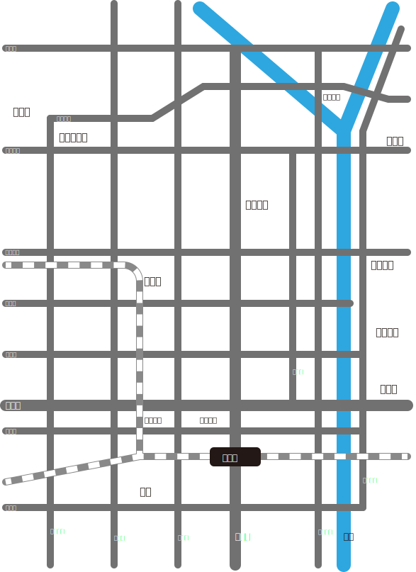

課題の概要
課題の概要
情報をわかりやすく伝えるためには、必要に応じて図などを作成する必要がある。写真などの現実に即したものが理解しやすい場合もあれば、元のものを忠実に模倣するよりも、その特徴などを強調したり、不要なものを取り除いたりする方が理解しやすい場合もある。このような手法をデフォルメという。特に地図においては、デフォルメの方がわかりやすい場合が多い。
そこで、今回の課題では、あなたの修学旅行における班別研修で巡る目的地を、わかりやすく説明するための京都市の地図をつくることを目的とする。
課題の提出について
- 提出期限
- 2024年9月2日（始業式の日） 22:00
- （2学期初回の授業で発表・相互評価をします。）
- 提出ファイル形式
- ① PNGファイル(.png)
- ファイル名「年組番の４桁の数字_氏名_京都の地図.png」
- ② Adobe Illustratorファイル(.ai)
- ファイル名「年組番の４桁の数字_氏名_京都の地図.ai」
- （例）4年9組3番 海城太朗君の場合、下記２つのファイルを提出。
- ①「4903_海城太朗_京都の地図.png」
- ②「4903_海城太朗_京都の地図.ai」
- ※異なる形式で提出されたものについては、正しく採点されないので注意。
- 提出内容
- 提出先
課題の評価について
下記の項目について評価します。
- オリジナリティ
- テーマの独創性を評価する。
- 他の生徒が作成していない（と思われる）ものほど高得点。
- テクニカル
- 授業で扱った技法がちゃんと活かせているかを評価する。
- （授業で扱った内容を超える技法は別途加点する）
- クオリティ
- コンプライアンス
- 課題の趣旨を理解し、それに応じた内容になっているか。
- 作成方法やファイル形式が指示にしたがっているか。
- （下記の最低要件を超えた分については別途加点する）
ただし、次の場合には減点または採点対象外とします。
2学期授業で相互評価をしてもらいます。相互評価のポイントも上記の通りです。自身の作品に対する相互評価は平常点に加味します。また、他者の作品に対して適切に評価できているかも平常点に加味します。
課題の手順と最低要件
課題の手順
- Illustratorファイルの新規作成
- Illustratorを開き、A4サイズのアートボードで新規作成する。
- 京都の地図の概形を作成する。
- 目的地の場所をわかりやすく伝えるための京都市の概形を作成する。
- （記載内容については、下記の最低要件を参照）
- Illusratorファイルの保存
- メニューバーのファイルから保存を選択。
- 保存先はコンピュータ（Creative Cloudではない）の任意の場所を選択（デスクトップ等）。
- ファイル形式をAdobe Illustrator(ai)を選択し、ファイル名を「年組番の４桁の数字_氏名_京都の地図.ai」として保存する。
- PNGファイルの出力
- 画像ファイルの出力を参考に、PNGファイルで出力する。
- （拡大・縮小は等倍 1x を指定）
- ファイル名を「年組番の４桁の数字_氏名_京都の地図.png」とする。
- ファイルの提出
- 上記の提出フォームを開き、必要事項を入力して提出する。
最低要件
地図は下記の最低要件を満たすものとする（下記の作成見本を参照）。
- 京都の地図は、旅行雑誌・観光用Webページ・Google Map等を参考にする。
- 南北方向の道路（西大路通・千本通・堀川通・烏丸通・寺町通・河原町通・東大路通）を直線で描く。
- 東西方向の道路（北大路通・今出川通・丸太町通・御池通・四条通・五条通・七条通・九条通）を直線で描く。
- 描いた道路の名前を入れる。
- 鴨川を描く。
- JR京都駅とJRの線路を描く。
- 有名なランドマーク（京都御所・金閣寺・銀閣寺・二条城・清水寺など）の名前を入れる。
- 上記範囲に班別研修の目的地が入っていれば、その目的地の名前を入れる。
（最低要件だけを満たすのであれば、１時間もあれば完成すると思います。）

最低要件を満たした例
最低要件を越えた内容について
- 上記の以外の範囲を含んだ上で、上記以外の範囲の地図を描いてもよい。
- より詳細な地図を描いても構わない。
- 道路はだいたい直線のことが多いが、曲線を用いてもよい。
- 授業で扱った内容を超えた技法を用いてもよい。
参考
より高度な使い方を学びたい人は、下記のチュートリアルを参考にしてください。